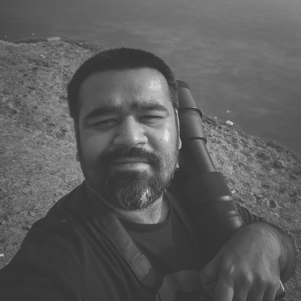

My name is Dax Pandhi. I'm the founder of QuadSpinner, where I have created software like Gaea and GeoGlyph, I am visual effects artist specializing in natural environments
I speak at conventions, events, and schools (SIGGRAPH, EUE, Mundos Digitales, Harvard). You can find most of my public learning material on our YouTube.
My most recent book was Realism in Vue, was very well recieved and is now available for free. I want to write another book, this time related to my work with wildlife conservation.
You can find my photography on Instagram @daxpandhi or @desertcrocs.
Contact me via Twitter or Facebook.
Unlike many NGOs, we are fully self-funded and do not seek donations.
Below is a teaser for our upcoming documentary Dragons in the Desert.
I post a lot of photos from the field (and not just about crocs!). Follow me on Instagram to see more.
That's it. Goodbye!
My name is Dax Pandhi. I'm the founder of QuadSpinner, where I have created software like Gaea and GeoGlyph, I am visual effects artist specializing in natural environments
I speak at conventions, events, and schools (SIGGRAPH, EUE, Mundos Digitales, Harvard). You can find most of my public learning material on our YouTube.
My most recent book was Realism in Vue, was very well recieved and is now available for free. I want to write another book, this time related to my work with wildlife conservation.
You can find my photography on Instagram @daxpandhi or @desertcrocs.
Contact me via Twitter or Facebook.
Wildlife Conservation
I spend almost as much time working with wildlife as I do in the software lab. I created The Mahim Pandhi Wildlife Foundation, where we work with endangered crocodiles in the arid desert of Kutch in India.Unlike many NGOs, we are fully self-funded and do not seek donations.
Below is a teaser for our upcoming documentary Dragons in the Desert.
I post a lot of photos from the field (and not just about crocs!). Follow me on Instagram to see more.
That's it. Goodbye!